Acest document are ca scop oferirea unui ghid simplu si concis de utilizare a aplicatiei noastre. Ilustratiile prezentate ajuta la intelegerea completa a conceptelor folosite in realizarea proiectului PasteIt.
PasteIt este o platformă unde poți stoca online orice text pentru a fi ușor de distribuit. Site-ul este destinat în mare parte programatorilor care doresc să împărtășeasca bucăți de cod sau informații de configurare (de servere, de baze de date), dar oricine se poate folosi de funcționalitățile aplicației.
Scopul documentului este de a veni in ajutorul noilor utilizatori care doresc sa interactioneze cu aplicatia noastra web. Cu ajutorul ilustratiilor grafice procesul de invatare a conceptelor din aplicatie devine facil. De asemenea, raportul detaliaza o descriere ampla a scenariilor care pot surveni in timpul folosirii aplicatiei.
Pentru acest proiect au fost utilizate urmatoarele tehnologii web: PHP, SCSS, JavaScript, Ajax. Toate aceste au fost folosite pentru a face experienta utilizatorului cu aplicatia mult mai prietenoasa.
Pentru acest proiect am optat pentru construirea unei arhitecturi de tipul MVC, datorita modularitatii pe care acest model o ofera.
Pentru o organizare mai buna, componenentele proiectului au fost impartite in mai multe directoare, fiecare avand specificul sau.
Acest director este entry point-ul aplicatiei noastre. Aici se afla toate informatiile necesare pentru afisarea interfetei utilizatorului, cum ar fi: fisierele css responsabile cu stilul paginilor, fisierele javascript responsabile cu dinamicitatea paginilor, directorul imagini in care se afla toate iconitele si imaginile care apar in documentatia site-ului, faviconurile site-ului si punctul de intrare in aplicatie reprezentat de fisierul index.php.
In acest director se afla nucleul aplicatiei noastre, aici putem gasi clase precum: Application, Router, Config Session, Validator etc. Toate aceste clase formeaza baza aplicatiei noastre. Vom detalia fiecare clasa din acest director mai tarziu in acest raport.
Acest director contine toate informatiile care creaza view-urile care sunt randate pentru a crea interfata utilizatorului. Toate fisierele scss care urmeaza a fi compilate pentru a reda stilul site-ului se afla aici, de asemenea si toate template-urile(view-urile) html se afla aici.
Acest director contine un fisier cu toate rutele accesibile in aplicatie.
Acest director contine toate fisierele care se ocupa cu migratiile catre baza de date. El contine clase care realizeaza diverse operatii DML asupra bazei de date la care este conectata aplicatia, precum: crearea tabelului de utilizatori, crearea tabelului responsabil cu postarile de pe site etc.
Am considerat ca pentru o restrictionare eficienta si usoara a accesului utilizatorilor neautorizati pe anumite pagini ale site-ului este bine sa folosim Middlewares. Astfel ca in acest director stocam toate middleware-urile utilizate.
Deoarece arhitectura aplicatiei este un MVC, in aceste directoare pastram toate modele si controllerele aplicatiei.
Pentru a avea un cod bine organizat si usor extensibil am ales folosirea namespace-urilor pentru clase. Prin urmare, in acest director se afla fisierul care realizeaza incarcarea automata a claselor.
Primul pas in realizarea acestui proiect a fost intelegerea cerintelor clientului, notand si discutand toate viitoarele caracteristicii pe care aplicatia urma sa le indeplineasca.
Pentru intelegerea mai rapida a flowurilor actiunilor pe care un utilizator le poate face in aplicatie, am recurs la realizarea diagramelor use-case care ne-au ajutat sa clarificam anumite concepte, sa stabilim un vocabular comun intre membrii echipei si sa definim foarte bine atributiile si drepturile pe care utilizatorul le are in aplicatie. 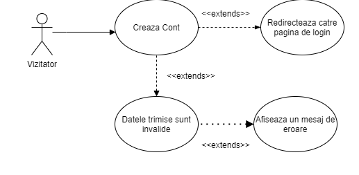 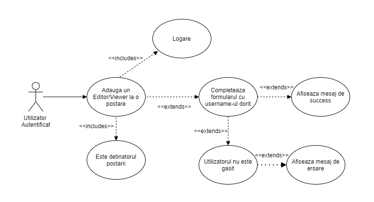 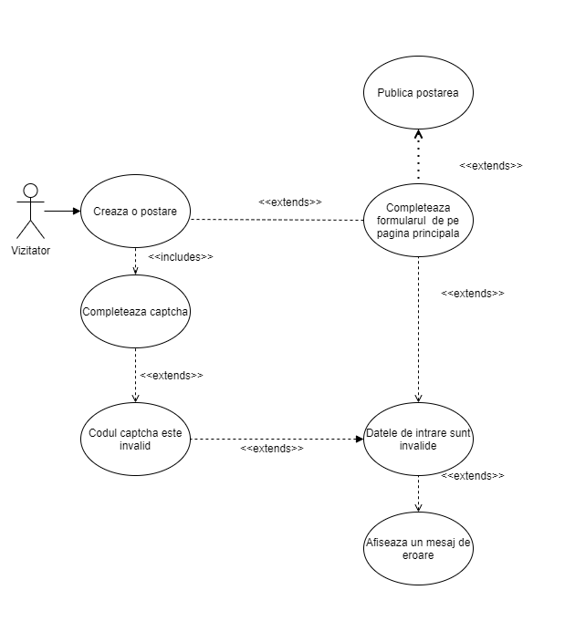 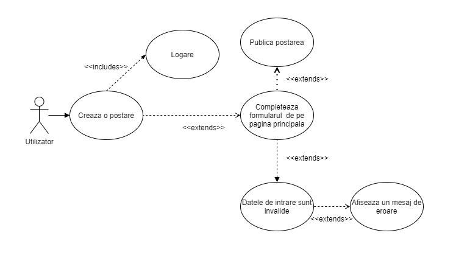 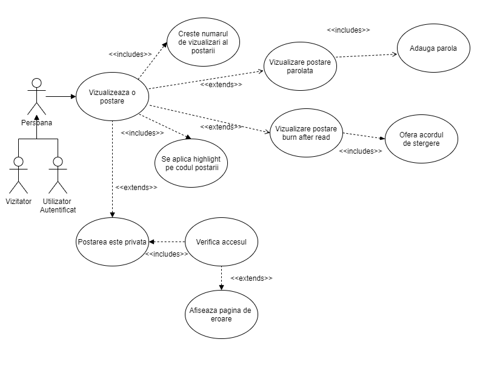
Odata stabilit flow-ul actiunilor din aplicatie urmatorul pas a fost crearea interfetei grafice a site-ului. Pentru acest task am utilizat urmatoarele tehnologii web: HTML, SCSS si Javascript, pentru ca aplicatia noastra sa poata rula pe orice browser modern care are javascript activat.
Cu interfata grafica stabilita, urmatorul pas a fost sa realizam diagramele C4 care ne-au ajutat in stabilirea componentelor externe si interne ale aplicatiei, stabilirea containerelor principale din aplicatia noastra,
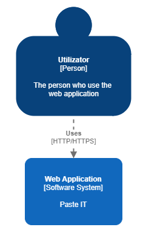 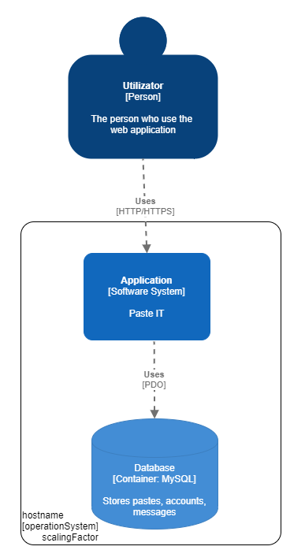 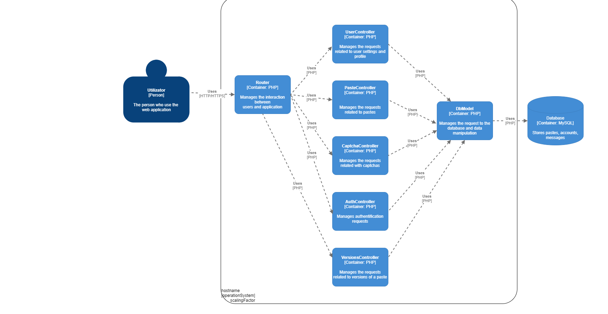cat si stabilirea relatiilor din clase prin intermediul diagramelor de clase. 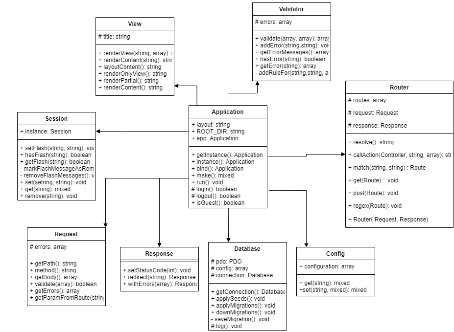 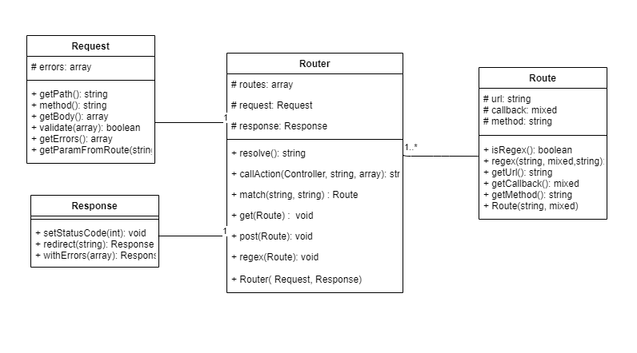 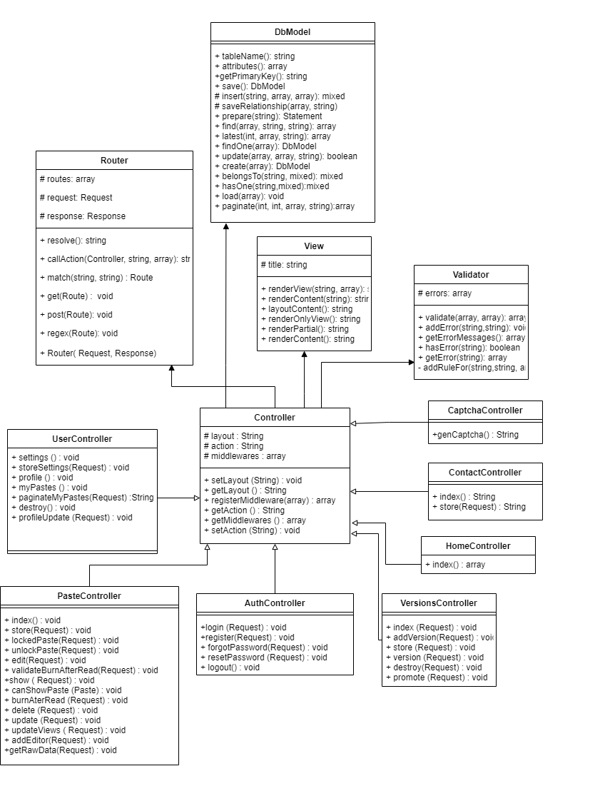 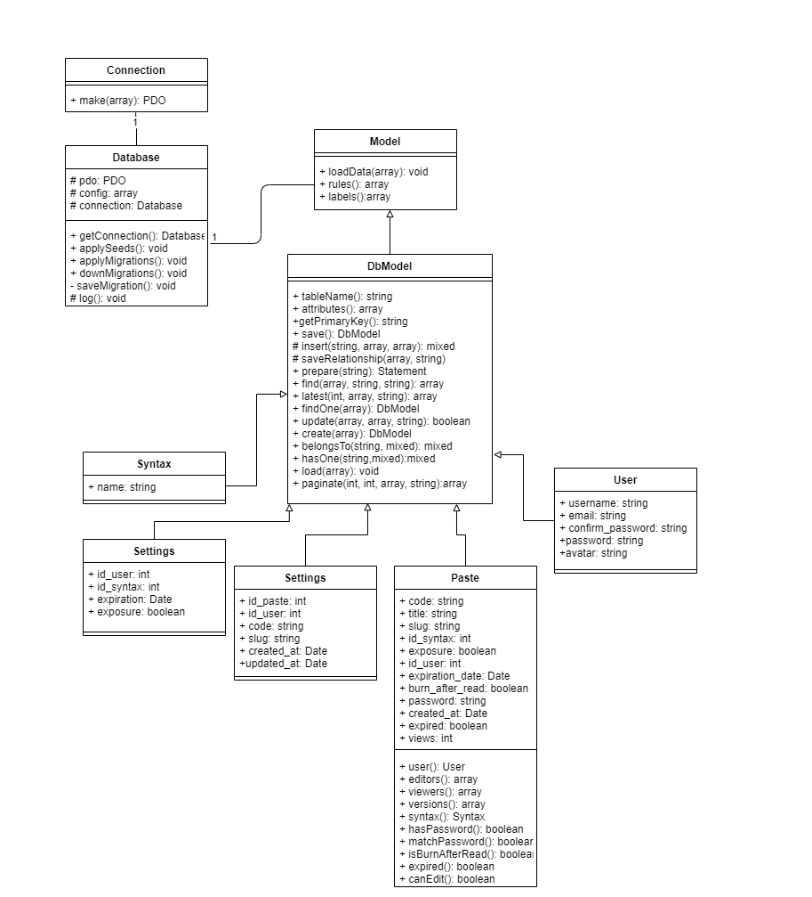
Avand toate conceptele bine intarite in minte, urmatorul pas a fost implementarea tuturor functionalitatilor pe care aplicatia noastra le ofera.
Deoarece am dorit sa evitam cazul in care clasa Application sa ajunga un god object, am decis ca aceasta va implementa un Inversion of Control Container. Modalitatea prin care acesta lucreaza este urmatoarea:
Sistemul de routing realizat foloseste urmatoarele clase: Router, Route, Request, Response. Clasa router este cea care se ocupa cu directionarea traficului pe site, aceasta stabiliste care sunt rutele care exista pe site si le rezolvai in consecinta. Clasa Route contine informatii referitoare la o ruta precum: url-ul la care se regaseste, ce controller este responsabil de rezolvarea ei, cat si care este verbul http la care se aplica.
Clasa Request reprezinta o mapare a variabilei superglobale $_REQUEST din PHP si contine diverse functii care eficientizeaza lucrul cu datele requesturilor facute de router. Iar in final, clasa Response se ocupa cu setarea informatiilor de raspuns(status code etc.) pentru un request al userului.
Rutele sunt declarate in fisierul web.php din folderul routes al proiectului.
Route::get('/pastes', "PasteController@index");
Route::post('/pastes', "PasteController@store");
Route::post("/pastes/unlock-paste", "PasteController@unlockPaste");
Route::post("/pastes/burn","PasteController@validateBurnAfterRead");
Route::regex("/\/pastes\/locked-paste\/[a-zA-Z0-9]+/","PasteController@lockedPaste","get");
Route::regex("/\/pastes\/burn-after-read\/[a-zA-Z0-9]+/","PasteController@burnAfterRead","get");
Clasa Validator este cea care este responsabila de validarea inputurilor primite de la utilizatori. Aceasta contine un set de reguli predefinite (required, email, confirmation, min, max) pe care clasa le foloseste ca sa valideze datele.
public const RULE_REQUIRED = 'required';
public const RULE_EMAIL = 'email';
public const RULE_UNIQUE = 'unique';
public const RULE_MATCH = 'match';
public const RULE_MIN = 'min';
public const RULE_MAX = 'min';
---------------------------------------------------------------------------------------------------------------
public function rules()
{
return [
'username' => [Validator::RULE_REQUIRED],
'email' => [Validator::RULE_REQUIRED, Validator::RULE_EMAIL, [Validator::RULE_UNIQUE, 'class' => $this]],
'password' => [Validator::RULE_REQUIRED, [Validator::RULE_MIN, 'min' => 6]],
'confirm_password' => [Validator::RULE_REQUIRED, [Validator::RULE_MATCH, 'match' => 'password']]
];
}
Pentru gestionarea sesinii curente am creat clasa Session care mapeaza variabila superglobala $_SESSION si adauga o interfata mai prietenoasa pentru lucrul cu aceasta variabila. De asemenea, am adaugat si conceptul de "flash message" care adauga o variabila in sesiune pentru o scurta perioada de timp. Este folosit adesea pentru a afisa mesaje de succes/insucces ale unor operatii.
Clasa Application contine o instanta a sesiunii, in array-ul instances, pe care o foloseste in lucrul cu utilizatorii.
Pentru lucrul cu o baza de date am optat pentru folosirea unei baze date MySQL, datorita suportului oferit de catre limbajul PHP. Conexiunea cu aceasta se realizeaza cu ajutorul clasei PDO, care ofera suport nativ pentru aceasta operatie.
De asemenea in realizarea tabelelor am optat pentru crearea unor migratii care au ca scop gestionarea operatiilor DML ce urmeaza a fi efectuate asupra bazei MySQL. Aceste fisiere pot fi gasite in directorul migrations al proiectului.
In plus, pentru emularea primei componente din modelul arhitectural MVC, modelul, am realizat un ORM(Object Relational Mapping) care gestioneaza toate operatiile DDL efectuate de aplicatia web in baza de date. Pentru aceasta, am creat clasa abstracta DbModel, care este mai apoi extinsa de toate clasele ce reprezinta entitati in aplicatia noastra (Paste, User, Syntax etc.).
Aceasta contine functii generice precum: insert, save, latest, find, findOne, hasOne, belongsTo, hasMany etc., care induc scrierea de cod mai curat si usor de inteles de catre programatori.
Mecanismul middleware ofera o modalitate eficienta de inspectare si filtrare a cererilor HTTP care intra in aplicatia noastra. Spre exemplu, aplicatia noastra contine un middleware care restrictioneaza accesul utilizatorilor neautentificati pe pagina "My pastes".
Pentru a crea un middleware este nevoie sa creem o clasa in directorul middlewares care sa extinda clasa abstracta Middleware. Aceasta va fi obligata sa implementeze functia execute, functie care va fi apelata la momentul requestului.
Pentru a face implementarea este nevoie ca in constructorul controllerului, in care se afla metodele rutelor care dorim sa fie filtrate, sa fie inregistrat un middleware ca in exemplul de mai jos:
public function __construct()
{
$this->registerMiddleware(new CheckIfAdmin());
}
In vederea utilizarii formularelor pentru diverse cereri catre server, am creat clase ajutatoare care abstractizeaza procesul de creare, validare si istoricul unui formular. Acestea se regasesc in directorul forms.
Clasa Form reprezinta containerul in care vor fi adaugate toate campurile formularului. Aceasta se ocupa cu : memorarea metodei si rutei catre care se va face cererea, adaugarea campurilor precum textarea, input, button si afisarea tuturor componentelor pe ecran.
Clasele Textarea si InputField sunt subclase ale abstractizarii BaseField, ce reprezinta implementari concrete ale conceptelor intalnite.
Mai exista si clasa Button care genereaza butonul ce va fi folosit pentru trimiterea cererii formularului catre server.
<?php $form = \app\forms\Form::begin('/register', "POST", "register-form simple-form") ?>
<?= $form->inputField($model, 'username') ?>
<?= $form->inputField($model, "email")->emailField() ?>
<?= $form->inputField($model,"password")->passwordField() ?>
<?= $form->inputField($model, 'confirm_password')->passwordField() ?>
<?= $form->submitButton('Register', 'form-group login-buttons', 'btn btn-primary') ?>
<?php \app\forms\Form::end() ?>
Pentru a imbunatati experienta utilizatorului cu aplicatia, am utilizat apeluri AJAX care gestioneaza cereri importante catre server precum: oferirea de roluri altori utilizatori asupra unui paste, cresterea numarului de vizualizari ale unui paste etc. . Un exemplu notabil pentru aceasta sectiune urmatorul block de cod:
let request = new XMLHttpRequest();
let url = '/paste/add-editor/id ?>';
request.open("POST", url, true);
request.responseType = "json";
let payload = new FormData();
payload.append("username", input.value);
payload.append("role", roleSelect.value);
request.onreadystatechange = function () {
if (this.readyState === 4 && this.status === 200) {
modalTitle.innerText = request.response["message"];
input.value = "";
modal.style.display = "flex";
error.innerText = "";
return;
}
error.innerText = request.response["errors"]["username"];
};
request.send(payload);
Aici se realizeaza operatiunea de oferire de rol unui anumit user pentru o postare de catre detinatorul acesteia. Observam ca pentru initierea apelului formulam un nou XMLHttpRequest cu care descriem o conexiune de tip POST asupra unui url specificat. Setam tipul raspunsului sa fie JSON, iar apoi construim payload-ul care urmeaza sa fie trimis catre server. In functia atribuita lui onreadystatechange, verificam raspunsul primit si declansam un modal adecvat acestuia. Apoi trimitem requestul catre server folosind functia send.
Pentru stilizarea paginilor am recurs la utilizarea tehnologiei SASS, care ofera o modalitate mai usoara de a scrie cod CSS. Organizarea fisierelor scss am facut-o dupa unul din patternurile recomandate in documentatia aflata pe site-ul sass.com si anume patternul 7-1. Astfel ca, fisierel au fost impartite in 7 directoare diferite fiecare avand un rol bine stabilit (component, page, layout etc.), dupa care au fost incluse toate in fisierul ce va urma a fi compilat si transformat intr-un fisier .css, app.scss.
In ceea ce priveste modul de afisare a codului publicat de utilizatori, am creat prin intermediul limbajului Javascript un syntax highlighter care se foloseste de un set de expresii regulate, specifice limbajului de programare specificat in postare, pentru a colora sintaxa codului de pe site in momentul incarcarii acestuia pe pagina.
let pattern ={
{
name: 'backquote',
match: /^(\`[^\`]*`)/
}, {
name: 'symbol',
match: /^(->|=>|=|\+|::|-|\*|<|>|&&|<=|\[|\]|!=|!|\.|null|\?\?|<\?php|\?>)/
}, {
name: 'keyword',
match: /^(function|return|switch|case|for|if|else|this|public|private|protected|use|class|extends|implements|namespace|new|throw)\b/
}, {
name: 'boolean',
match: [/^(true|false)/]
}, {
name: 'number',
match: [/^(\d+)/]
},
}
----------------------------------------------------------------------------------------------------------------------------------
window.addEventListener("load", () => {
let sourceCode = document.getElementById("source");
let patternName = "syntax()->name);?>";
let syntax = new SyntaxHighlither();
console.log(syntax);
syntax.setLanguage(patternName, pattern);
syntax.highlight(sourceCode, patternName);
});